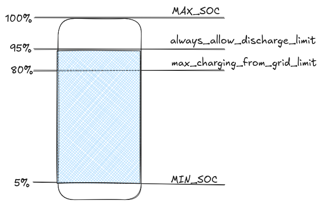

Main Configuration
This is the main control logic configuration:
timezone: Europe/Berlin #your time zone. not optional.
time_resolution_minutes: 60 # Time resolution for forecasts: 15 (quarter-hourly) or 60 (hourly). Default: 60
loglevel: debug
logfile_enabled: true
log_everything: false # if false debug messages from fronius.auth and urllib3.connectionpool will be suppressed
max_logfile_size: 200 #kB
logfile_path: logs/batcontrol.log
Time Resolution (with 0.6.0)¶
time_resolution_minutes: 60
Recommendation: Use 15 minutes if your dynamic tariff provider offers quarter-hourly prices (e.g., some Tibber or energyforecast.de plans). Use 60 minutes for standard hourly tariffs or if you want to minimize resource usage.
Technical Details: - 15-min mode: 192 intervals per 48 hours (~8 KB per forecast) - 60-min mode: 48 intervals per 48 hours (~2 KB per forecast) - All forecast providers automatically adapt to the configured resolution - MQTT topics publish data at the configured interval
Timezone¶
This parameter is used to calculate the correct time for your location, as some datasources deliver UTC based timeslots. Valid values are tz based(wikipedia).
Logfile¶
Logpath¶
logfile_path: logs/batcontrol.log
Log Level¶
loglevel: debug
- error
- warning
- info
- debug
The recommended settings are info and debug.
To reduce the noise in the default setup, we introduced
log_everything: false
true, the logmessage from Fronius authentication logic + HTTP-Requests are visible in the logfile. These are very verbose messages, which is the reason to only enable it for debugging purposes.
Enable / Disable logfile¶
logfile_enabled: true
This parameter is used to enable a pyhsical logfile. Console out is still active if this value is set to false. This can be useful in docker-based environments.
Logsize¶
max_logfile_size: 200 #Kb
max_logfile_size. This is used to avoid a filling up disk.
Batcontrol alogrithm configuration¶
battery_control:
min_price_difference: 0.05
min_price_difference_rel: 0.10
always_allow_discharge_limit: 0.90
max_charging_from_grid_limit: 0.89
min_grid_charge_soc: 0.55 # optional: grid-charge to this SoC before expensive slots
grid_charge_target_strategy: fixed # optional: fixed or forecast
min_recharge_amount: 100
always_allow_discharge_limit & max_charging_from_grid_limit is explained here.

min_grid_charge_soc is optional. When set as a ratio, for example 0.55, batcontrol grid-charges toward this target when charging is economical. Leave it unset to keep the default behavior.
grid_charge_target_strategy controls how min_grid_charge_soc is applied:
fixed(default): grid-charge towardmin_grid_charge_socwhen charging is economical.forecast: use existing high-price-slot demand as an additional reserve. The target is roughlymin_grid_charge_socenergy plus the calculated high-price required energy, capped bymax_charging_from_grid_limit.
To also preserve this target as reserved energy during cheap/pre-expensive windows, enable the expert option preserve_min_grid_charge_soc. Without that expert option, the strategy affects grid recharge only and does not add extra discharge blocking.
If min_grid_charge_soc is higher than max_charging_from_grid_limit, grid charging cannot reach the configured minimum SoC target. Batcontrol will log a warning in this case; increase max_charging_from_grid_limit or lower min_grid_charge_soc so the settings correlate.
min_recharge_amount controls the minimum amount of Wh is needed to be recharged before batcontrol activates battery charging.
Battery Control Expert Tuning Parameters¶
battery_control_expert:
charge_rate_multiplier: 1.1
soften_price_difference_on_charging: false
soften_price_difference_on_charging_factor: 5
round_price_digits: 4
production_offset_percent: 1.0
preserve_min_grid_charge_soc: false
These expert parameters allow fine-tuning of Batcontrol's behavior. See Battery Control Expert for detailed explanations of each parameter:
| Parameter | Type | Default | Description |
|---|---|---|---|
charge_rate_multiplier |
float | 1.1 | Multiplier for calculated charge rate to compensate for charging inefficiencies |
soften_price_difference_on_charging |
boolean | false | Enable earlier charging based on more relaxed price difference calculations |
soften_price_difference_on_charging_factor |
integer | 5 | Factor to soften price difference requirements when enabled |
round_price_digits |
integer | 4 | Decimal places for price rounding in comparisons |
production_offset_percent |
float | 1.0 | Multiplier to adjust solar production forecast (1.0 = no change, 0.8 = 80%, etc.) |
preserve_min_grid_charge_soc |
boolean | false | Also preserve min_grid_charge_soc as reserved battery energy during cheap/pre-expensive windows |